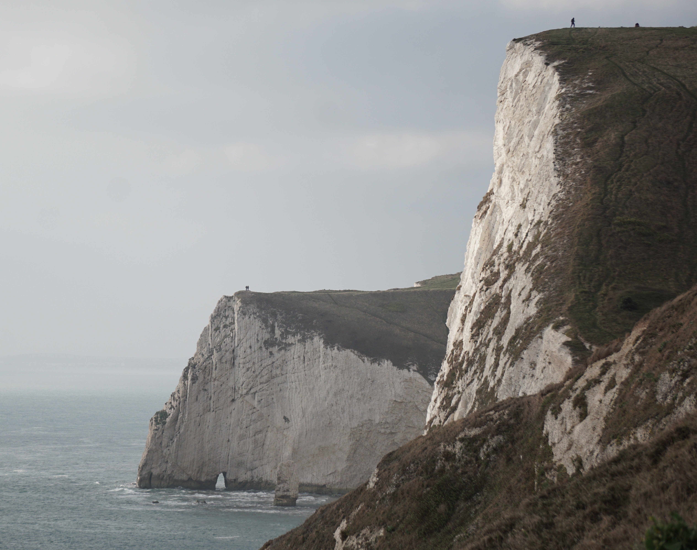

I am a highly motivated and detail-oriented professional with a strong curiosity for technology, data and problem-solving. I enjoy developing data-driven solutions and efficient workflows to analyse complex information, identify patterns and solve real-world problems. I have a strong understanding of geospatial data and its application in analysing spatial and temporal patterns, alongside knowledge of data science, machine learning, deep learning and statistical modelling. My technical skills include Python, R, Google Earth Engine, ArcGIS Pro, QGIS and Microsoft Excel. I hold an MSc in Geographical Data Science from the University of Leicester (2025) and a BSc (Hons) in Earth Resources Engineering from the University of Moratuwa (2022).
Spatial and temporal analysis using census data, clustering techniques and geodemographic classification.
Developing neural network models to predict cell growth using machine learning and statistical techniques.
Satellite imagery analysis, ArcGIS Pro digitisation, NDVI and remote sensing techniques.
AIESEC volunteering experience in Sri Lanka.